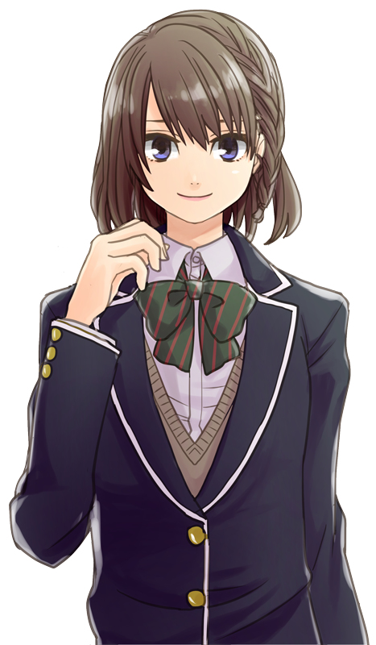

高校2年の夏、
決まらない進路
目的のない授業
親に行かされる習い事
大切な青春の一瞬を言われるがままに過ごしてきた
「こんにちは、池くん（可変）」
突然、話しかけてきたのは鏡の中の自分だった
憎たらしい鏡の中の自分は、
自分とは正反対の性格
拒絶しようにも、鏡の中にはいつも彼がいる
不可思議な出来事の最中、
自分を取り巻く環境・友人にも異変が起きていた
アンマッチな2人が心を通わす時、
自ずと次の進むべき道が見えてくる
選択するのは自分だ
さあ、一歩を踏み出そう！！
・主人公(池(可変))
高校2年生
人に流されやすい性格
人に言われるがまま行動することが当たり前になっている
BL漫画が好き
・鏡の中の自分
突然鏡の中に現れ、自立して話しかけてくる
嫌味ったらしい性格
主人公に苦言を呈してくるが、
心を読んでいるかのような、的確な指摘をしてくる

・ヒロイン(みき)
主人公(池(可変))が気になっている子
クラス一の美少女
大人しい性格だが、自分の意思をしっかり持っている
・キテラ
主人公(池(可変))の友人
長身・でぶ
自分の欲望に忠実な男
ある日、近所の祠を不注意で壊してから、
不審な行動に出るように…